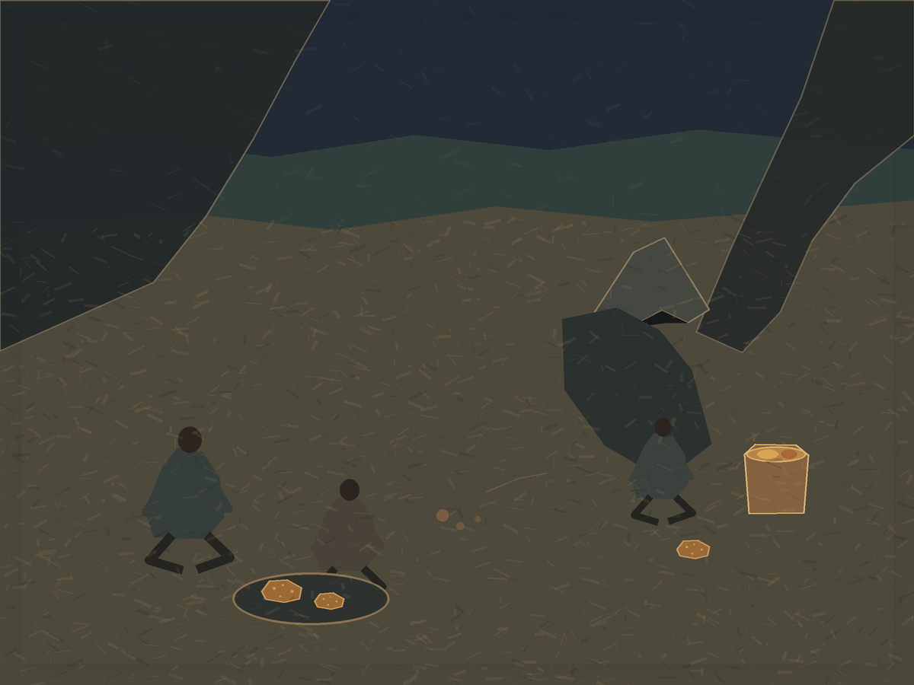

Two Small Suppers
Digital painting, 1200 × 900
In Chapter 17 of John Steinbeck’s The Grapes of Wrath, families at the roadside camp eat what they can afford, with canvas between them but no complete privacy. This imagined scene places a shared plate and an open tin on opposite sides of a tent flap. The figure left in the interval keeps the difference from becoming a diagram of two sealed groups. The scene belongs to the novel, not to a documentary camp or a historical map.